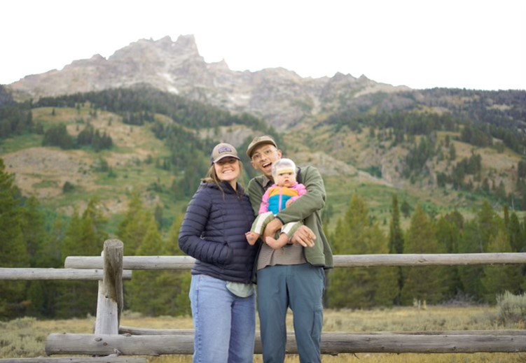

Jeremy Barton

Hi everyone, name is Jeremy Barton. I am married to the most wonderful woman in the world. We have an adorable baby girl who wears a little helmet. We like hiking, climbing, and cooking together.
I, theoretically, will graduate in computer science in December 2025. I am excited for web development because I'm hoping to make some cool websites using programming, perhaps calling some API's. Cool programs are cool to programmers. Cool websites are cool to anyone in the modern world.